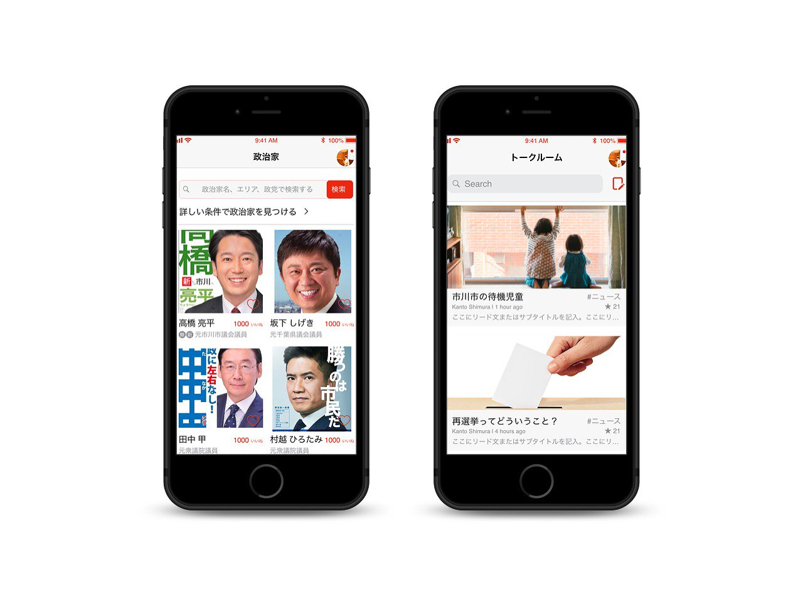

PoliPoli
『ポリポリ』
『ポリポリ』は政治というイノベーションが遅れている分野を「エンターテイン」することで、イノベーションを起こします。
トークンエコノミーを用いて経済圏を作り出すことで、政治家と有権者双方のニーズを満たすために立ち上がったプラットフォームプロジェクトです。
我々は抽象的な議論でなくテクノロジーこそが国家システムを前進できると信じ 日本初のPolitech (Politics × IT) スタートアップ企業として挑戦します。
最新のテクノロジーをサービスに実装し、その恩恵を社会に届けます。
会社内・外への情報公開を徹底します。
関係者すべての幸福度を最大化するように活動します。
常にユーモアを持ち、自由な発想でサービスを作ります。
『ポリポリ』は政治というイノベーションが遅れている分野を「エンターテイン」することで、イノベーションを起こします。
トークンエコノミーを用いて経済圏を作り出すことで、政治家と有権者双方のニーズを満たすために立ち上がったプラットフォームプロジェクトです。
NEM/XEM（ネム/ゼム）をはじめとした仮想通貨決済でオリジナル請求書が表示できる「Virtual Pay」。
簡単にお店のオリジナルQRコードを表示できます。